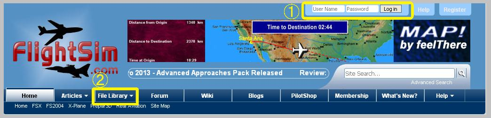
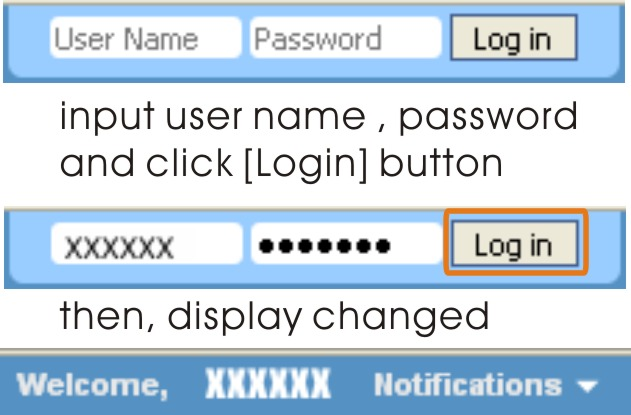
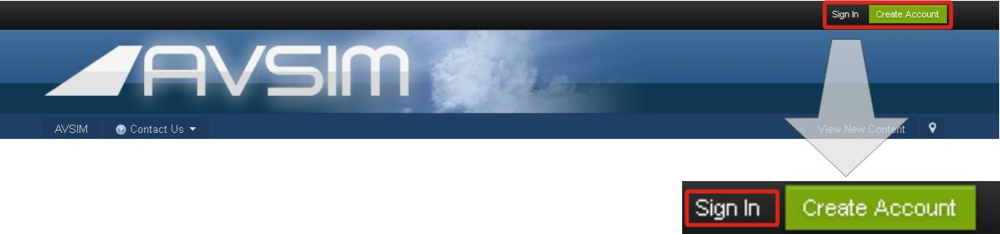

sceneryの入手方法
以下のsceneryはFS9(FS2004) / FSX の当該エリアをアップグレードします。
これらのsceneryを使用するには，
お使いのパソコンに FS9 / FSX が既にインストールされていることが
必要です。sceneryだけ入手しても単体では動作しません。
ご注意下さい。
インストールについては，添付のドキュメントファイルを参照して下さい。
いずれのシーナリーもフリーウェアとして公開しております。
Scenery Title |
File Name |
| FSX Scenery FRENCH POLYNESIA TUAMOTU ARCHIPELAGO SCENERY PART A | FTPA-XA.zip |
| FSX Scenery FRENCH POLYNESIA TUAMOTU ARCHIPELAGO SCENERY PART B | FTPA-XB.zip |
| FSX Scenery FRENCH POLYNESIA TUAMOTU UPDATE for SP2 | FTPA-sp2.zip |
| FS2004 Scenery FRENCH POLYNESIA TUAMOTU ARCHIPELAGO SCENERY 2006 PART A | fpta2k6a.zip |
| FS2004 Scenery FRENCH POLYNESIA TUAMOTU ARCHIPELAGO SCENERY 2006 PART B | fpta2k6b.zip |
| FS2004 Scenery BUTTERFLY ISLAND | bf2k5.zip |
| FS2004 Scenery Tokyo Bay 2005 | TBS2k5.zip |
| FS2004 Scenery TAHITI LEEWARD ISLANDS | LWHR2004.zip |
| FS2004 Scenery TAHITI RANGIROA SCENERY | Rang2004.zip |
| FS2004 Scenery Midway Island | Midway2004.zip |
| FS2004 Scenery South West Islands Japan And Taiwan | SWIJT2k4.zip |
入手先
| FlightSim.com | URL http://Flightsim.com/ |
| avsim.com | URL http://avsim.com/ |
Flightsim
メインページの上方右側に，以下に示すようにログインメニューが表示されています。

[1] User Name と Password を入力し，Login ボタンをクリックします。

[2] ログイン後に表示されるメニューから File Library を選択し，Search Files をクリックします。

検索画面が表示されるので，Search for text ボックスに "kawamura" と入力します。

Start Search ボタンをクリックすると，
私が登録したシーナリーの一覧がサムネイル画像付きで表示されます。
avsim
メインページの上方右側に，以下に示すような Sign In ボタンが表示されています。

Sign Inボタンをクリックすると，サインインページが表示されるので，
User Name と Password を入力し，Sign In ボタンをクリックします。

サインイン後に表示されるメニューからLibraryを選択し，Library Main Page をクリックします。

ライブラリへのログインページが現れるので，
Login name と Password を入力し，Login ボタンをクリックします。
注意: ログインネームとパスワードはフォーラムへサインインしたときのものとは異なります。

ライブラリページが現れるので，
Search for:ボックスに "kawamura" と入力し，Search ボタンをクリックします。

私が登録したシーナリーの一覧が(一部)サムネイル画像付きで表示されます。